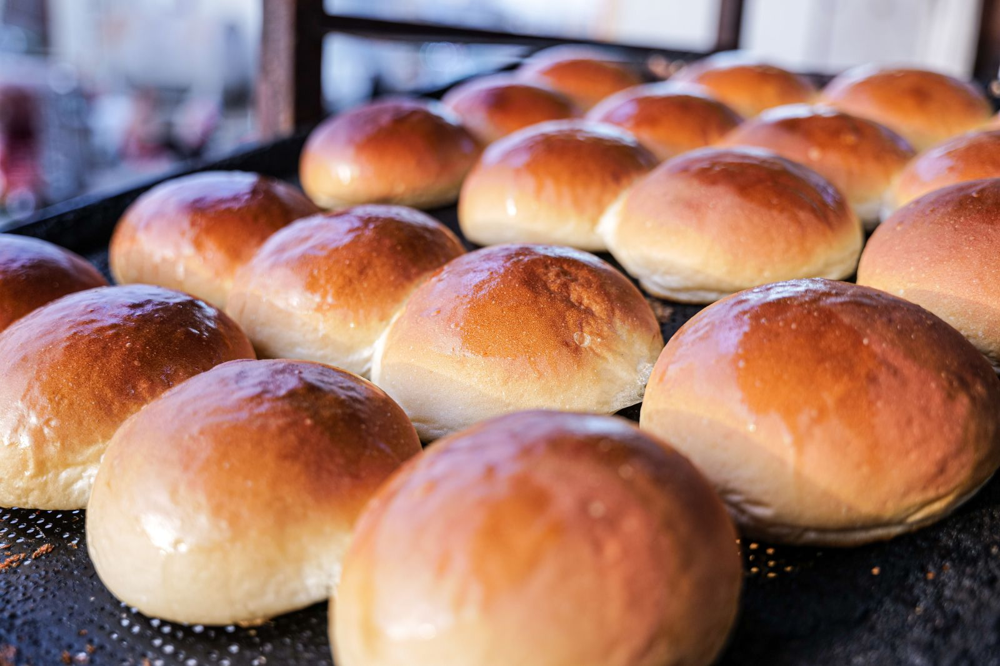

Begynderguide
Få overblik over, hvordan du laver dejen, lader den hæve og former og bager bollerne.
Læs begynderguiden →En enkel guide til dig, der vil bage dine første boller. Se, hvad du skal bruge, og følg trinene i dit eget tempo.
Kom i gang
Få overblik over, hvordan du laver dejen, lader den hæve og former og bager bollerne.
Læs begynderguiden →Se, hvad du skal bruge til dine første boller.
Se udstyrslisten →Følg en enkel opskrift, og prøv selv i dit eget tempo.
Se opskriften →